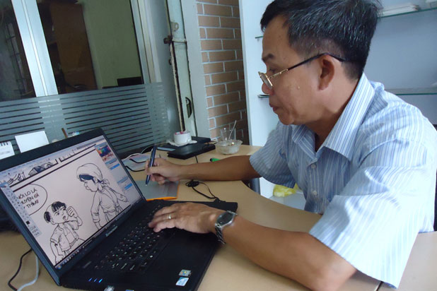
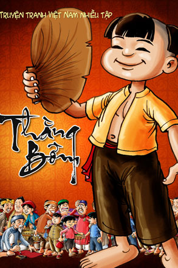

Người nặng lòng với truyện tranh Việt
Họa sĩ Hùng Lân hoàn thành một trang trong tập truyện tranh “thằng Bờm”.
N guyễn Hùng Lân - ông họa sĩ của “Dũng sĩ Hesman”, “Cô tiên xanh”... một thời làm mê mẩn bao nhiêu người trẻ - đã bước vào cái tuổi 56. Cái tuổi chẳng đáng gọi là “ông già” như ông vẫn hay tự giễu mình “già mà ham vui”.
Ông ham vui thật, vì thỉnh thoảng tôi “bắt gặp” ông trên mạng xã hội, cập nhật trạng thái bằng những câu nói hài hước, tếu táo, vẫn dành nửa ngày trong tuần để đàn, hát và đi nhà thờ. Dù ham vui thế nào, “ông già” ấy vẫn nặng lòng với truyện tranh Việt. “Vẽ truyện không chỉ thẳng tưng như một phương kế mưu sinh. Họa sĩ nào chẳng mong vẽ cho nhanh để lấy nhuận bút, để sống. Nhưng tôn trọng độc giả thì phải vẽ cho ra cái hồn, cái vía”.
“Người máy” vẽ “dũng sĩ”
Ngồi nói chuyện với họa sĩ Hùng Lân mà tôi vẫn ngờ ngợ, không ngờ mình đang ngồi với tác giả của bộ truyện “Dũng Sĩ Hesman” từng mê đắm bọn trẻ chúng tôi. Cái thời sách báo hạn chế, tôi phải chờ mãi cuốn truyện mới đến tay mình, thậm chí phải đổi vài cái kẹo để đám bạn đưa cho tôi trước. Đọc xong lại tỉ mẩn lấy giấy than đồ hình dũng sĩ. Nói những chuyện này, ông họa sĩ của tôi cười hì hì, khoe hết cả những nếp nhăn, khoe hết cả sự gần gũi thân mật.
Họa sĩ Hùng Lân (trái) và tác giả.
Cho đến nay, họa sĩ Hùng Lân đã trải qua 25 năm cầm cọ. Ông bắt đầu vẽ từ cái thời máy vi tính, tivi, thậm chí là đèn điện còn là những thứ xa xỉ, hiếm hoi, phải vẽ hoàn toàn bằng tay, viết chữ cũng bằng tay. Tính ra ông đã có gần 700 tập truyện tranh với nhiều bộ truyện đủ loại, từ cổ tích ta, cổ tích tây đến khoa học viễn tưởng, comic cách điệu. Thế mà ông vẫn khiêm tốn, chẳng dám nhận mình là họa sĩ: “Bạn đọc quý tôi thì phong cho tôi là họa sĩ chứ, nào tôi đã có cái bằng đại học, tôi phải từ giã trường đại học vì hồi ấy gia đình khó khăn lắm, chủ yếu là kinh nghiệm dạy mình”.
Ông ví mình là “người máy” bởi kỷ niệm 5 năm trời ăn với Hesman, ngủ với Hesman. “Cứ tính con đường của anh nhân viên nhà xuất bản xuống lấy bản thảo của tôi trong 5 năm trời thì biết. Này nhé, cứ thứ ba và thứ bảy anh được sai đi từ TPHCM xuống Bà Rịa là nhà tôi để lấy bản thảo về in. Vẽ được bao nhiêu in bấy nhiêu. In nửa cuốn trước rồi chờ tôi vẽ nửa cuốn nữa lại xuống lấy. Con đường cả đi cả về của anh ta trong một tuần là 500 cây số. Tôi tính nhẩm 500 cây số nhân với 159 tập truyện Hesman và 52 tập truyện Siêu nhân Việt Nam. Vậy trong 5 năm, anh ấy đi hơn hai vòng trái đất chứ chẳng chơi. Tôi thì ráng sức mà vẽ, tuần nào cũng phải vẽ 72 trang. Trong 5 năm liền, tôi không bị điên là may lắm đó”.
Nhân vật Hesman nói theo kiểu của họa sĩ Hùng Lân là “nhân cách hóa cái thằng robot” để làm một nhiệm vụ bảo vệ vũ trụ. Chỉ từ 2 cuốn băng video về nhân vật Voltron mà ông phóng tác ra ban đầu là 4 tập truyện. Nhà xuất bản Mỹ Thuật Hà Nội thấy sách bán được quá, yêu cầu ông phóng tác ra 10 tập, rồi 20 tập, 50 tập, cuối cùng là 159 tập, in bao nhiêu bán hết bấy nhiêu. Vậy là một tuần ông chỉ được rời bàn vẽ nửa ngày. Tính chi li còn 6 ngày rưỡi để vẽ 72 trang truyện. Mà nói là vẽ chứ phải có kịch bản hấp dẫn, lên kịch bản mất một ngày rưỡi, vẽ bìa hết một ngày, còn đúng 4 ngày để vẽ ruột. Tính ra mỗi ngày phải vẽ 18 trang. Mà vào những thập niên 90 - “chưa biết mặt mũi cái máy tính ra làm sao”, ông phải vẽ hoàn toàn bằng tay, không có máy tính, chữ cũng phải viết sao cho giống chữ in.
“Đúng là người máy thật, nghĩ lại tôi thấy còn khó tin. Nếu giờ mà thuê một anh nhân viên làm công việc lên kịch bản cho 72 trang trong 1 tuần chưa chắc đã xong. Hồi ấy, tôi cứ phải dậy lúc 4 giờ sáng, vừa dậy là vẽ. Cả vợ tôi, hai con trai tôi cũng xông vào phụ tôi ở công đoạn tô màu và vẽ áo quần cho nhân vật. Ròng rã 5 năm trời, tôi phải thay 5 cái ghế trong 5 năm vẽ truyện Hesman”.
Ông cho rằng cái khó nhất trong công việc sáng tác chính ở kịch bản. Để viết được một cái kịch bản hay, đòi hỏi người họa sĩ phải có một cái tài “bịa” và “lượm lặt”. Từ những ý tưởng, những hình ảnh trong film, những món đồ chơi, ông phải nghĩ ra những câu chuyện, nhân vật mới rồi phải sắp xếp chúng vào một câu chuyện cho chặt chẽ, logic. “Đang gấp rút vẽ cho một tập truyện này mà nghĩ ra một ý tưởng cho tập truyện khác, tôi phải ghi ngay vào tờ giấy bên cạnh. Ý tưởng đến bất ngờ lắm. Cũng may là độc giả đón nhận truyện của mình quá, nên không dám cạn ý tưởng” - ông hóm hỉnh kể.
Mỗi chuyện một bài học làm người
Cho đến nay, khi tất cả các thiết bị vẽ truyện hiện đại như bàn vẽ pen tablet, kết nối với máy vi tính giúp việc vẽ và chỉnh sửa dễ dàng hơn, ông càng trăn trở ở khâu kịch bản, tạo hình và xây dựng tính cách nhân vật. Không chỉ là “Dũng Sĩ Hesman”, “ông già” - “người máy” Hùng Lân còn thực hiện nhiều bộ truyện tranh khác như “Cô Tiên Xanh”, “Siêu Nhân Việt Nam”, “Vó Ngựa Sài Gòn”. Gần đây nhất, ông đang hoàn thành bộ truyện “Thằng Bờm” với 2 tập cuối.

Một trong những hình ảnh trong truyện “Thằng Bờm” mà ông vừa vẽ (ảnh nhỏ).
“Tài liệu về thằng Bờm trong dân gian quá ít. Chỉ là thằng Bờm có cái quạt mo... Rồi có nhà nghiên cứu cho thằng Bờm là một đứa trẻ chăn trâu, thông minh, ham học hỏi. Người thì cho rằng Bờm là một anh chàng thanh niên láu cá. Tôi nghiêng về nghiên cứu của Nguyễn Vỹ, thằng Bờm của tôi có đầu 3 chỏm, là một thằng bé chăn trâu mồ côi, thông minh...”. Tôi hiểu để vẽ ra một thằng Bờm cũng phải tham khảo nhiều sách vở lắm chứ không chỉ là “bịa” và “lượm lặt” như ông khiêm tốn nói.
Đến cái tuổi đáng được về hưu và con cái đã thành đạt, ông cho mình cái quyền được vẽ 4 trang một ngày, có thời gian thảnh thơi để nghiên cứu, suy nghĩ: “Truyện tranh dù mang tính giải trí nhưng cũng phải chú trọng tính giáo dục, nhân văn. Tôi muốn xây dựng cốt truyện làm sao để mỗi tập truyện gài vào đó một bài học làm người”. Những nhân vật của ông là: Thằng Bờm, là bé Mít, Ất, Sửu, bà Lách, ông Xã Xệ, Loan cô nương, Lý Toét... Mỗi nhân vật lại mang một tính cách thật đặc biệt và rất thuần Việt.
“Này nhé! Loan cô nương là con quan huyện nhưng chửa hoang. Cô ta thích anh Tú và tìm mọi cách gài anh Tú để hợp thức hóa bào thai. Nhưng mà anh Tú mỗi lần thấy cô này lại sợ quá và bỏ chạy. Cái tục ở làng là gái chửa hoang phải đem vô rọ thả trôi sông. Thằng Bờm tuy trước giờ không ưa Loan cô nương lắm bởi cái tính đỏng đảnh và hay khoe của, nhưng trước tính mạng của cô thì cũng cố tìm mọi cách để thuyết phục dân làng. Nó xui thằng Ất về lấy trộm con lợn của bà Lách bỏ vô rọ thả trôi sông. Dân làng thấy vậy nhảy xuống cứu con lợn. Vậy là Bờm lấy đó mà nói cho dân làng cái lẽ sao cứu một con lợn mà lại nỡ lòng giết đi một người con gái... Tôi cố nghĩ ra những câu chuyện như thế để truyện tranh trở nên nhân văn, mang tính giáo dục một chút”. Ông kể mà trong đôi mắt ẩn sau cặp kính cận dày cộp dễ đến vài điốp ánh lên sự say sưa, thích thú.
Sau hàng giờ ngồi bàn vẽ, “ông già” ham vui dành thời gian để đàn hát.
Có lẽ, họa sĩ Hùng Lân là một trong những họa sĩ truyện tranh hiếm hoi của Việt Nam sống tạm được với nghề: “Trước thực trạng truyện tranh nước ngoài tràn vào thị trường ta như thác lũ, nhà xuất bản cứ lấy bản của nước ngoài, dịch rồi bê nguyên xi đi in chẳng mất tiền thuê họa sĩ vẽ. Thế nên, để vực dậy truyện tranh Việt Nam khó lắm, đòi hỏi phải có thế và lực. Thế là tiền để nuôi tầng lớp họa sĩ, lực là cái tâm của các nhà xuất bản. Biết đến bao giờ”.
Chia tay họa sĩ Hùng Lân, tôi cứ vương vất mãi câu nói “biết đến bao giờ”. Có lẽ, với ông nó có nghĩa như một lời than thở. Còn với tôi, đó như một câu hỏi đầy day dứt. Dĩ nhiên không đến lượt tôi phải trả lời. Tôi, họa sĩ Hùng Lân và cả lớp họa sĩ trẻ, những người có tâm với truyện tranh Việt cũng đang chờ một câu trả lời lắm.
Họa sĩ Nguyễn Hùng Lân sinh ngày 1.6.1956, là tác giả của các bộ truyện tranh: “Dũng sĩ Hesman”, “Cô tiên xanh”, “Siêu nhân Việt Nam”, “Vó ngựa Sài Gòn”, “Thằng Bờm”... Tính đến nay, ông đã xuất bản gần 700 tập truyện tranh với trên 10 bộ truyện. Ông xuất bản tập truyện đầu tiên năm 1987 mang tên “Người đầu tiên lên mặt trăng”. Không chỉ là một họa sĩ truyện tranh, năm 2002, ông tự mày mò thiết kế font chữ VNI-comic, rồi sau đó là VNI-thư pháp 1 được đông đảo người sử dụng.